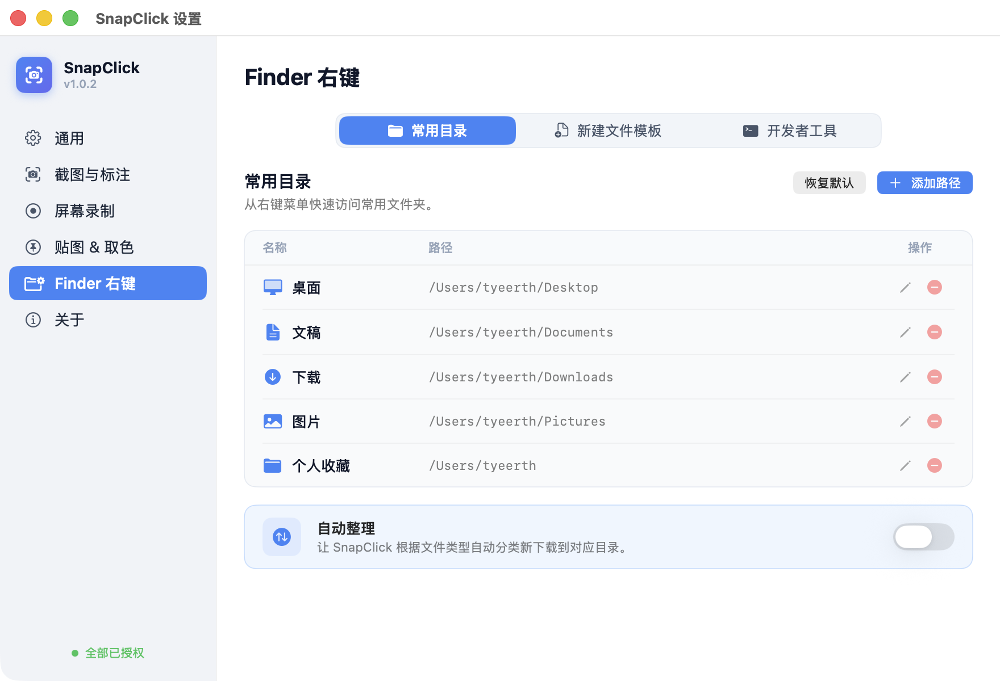
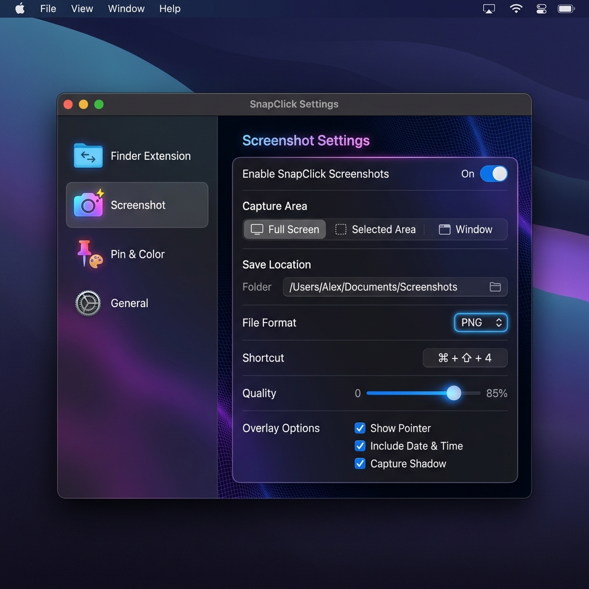
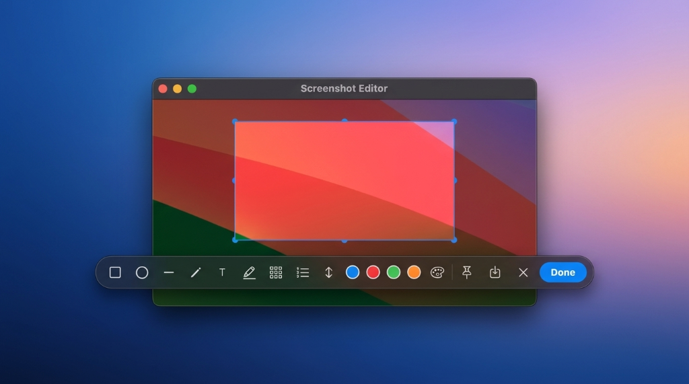
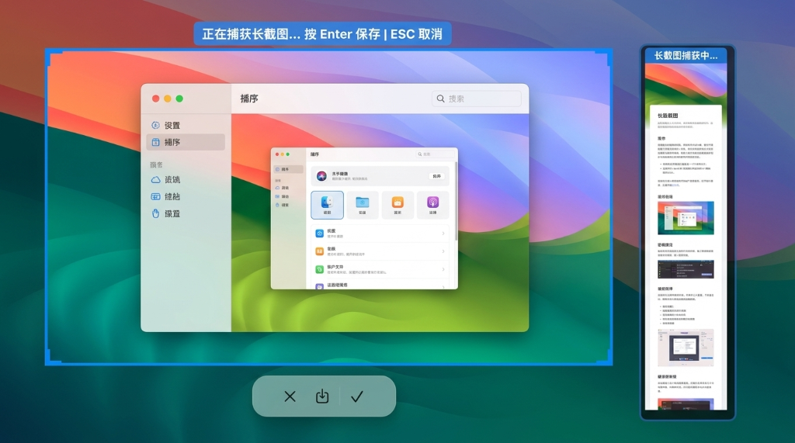
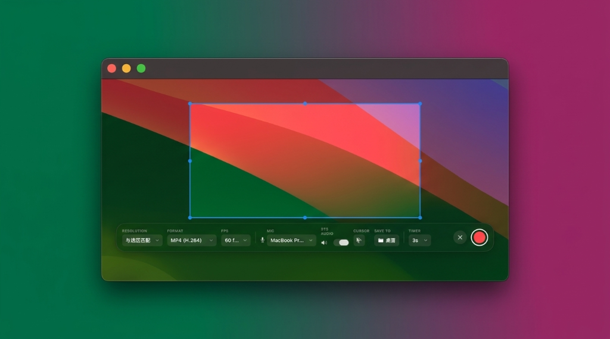
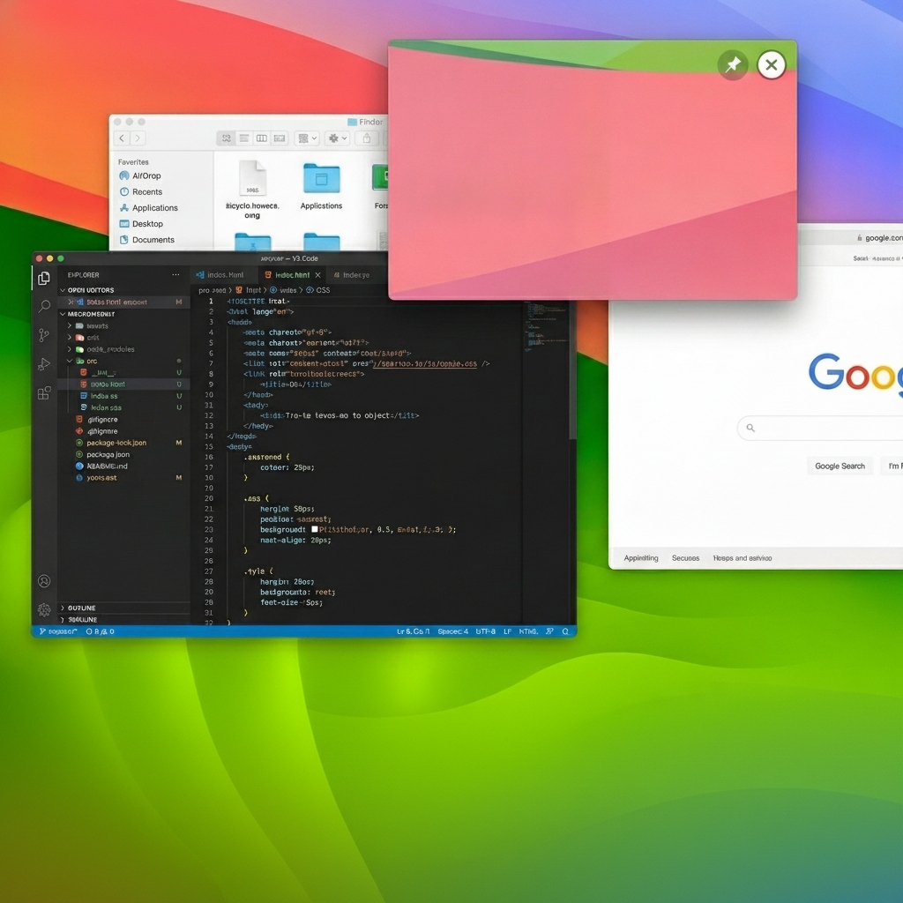
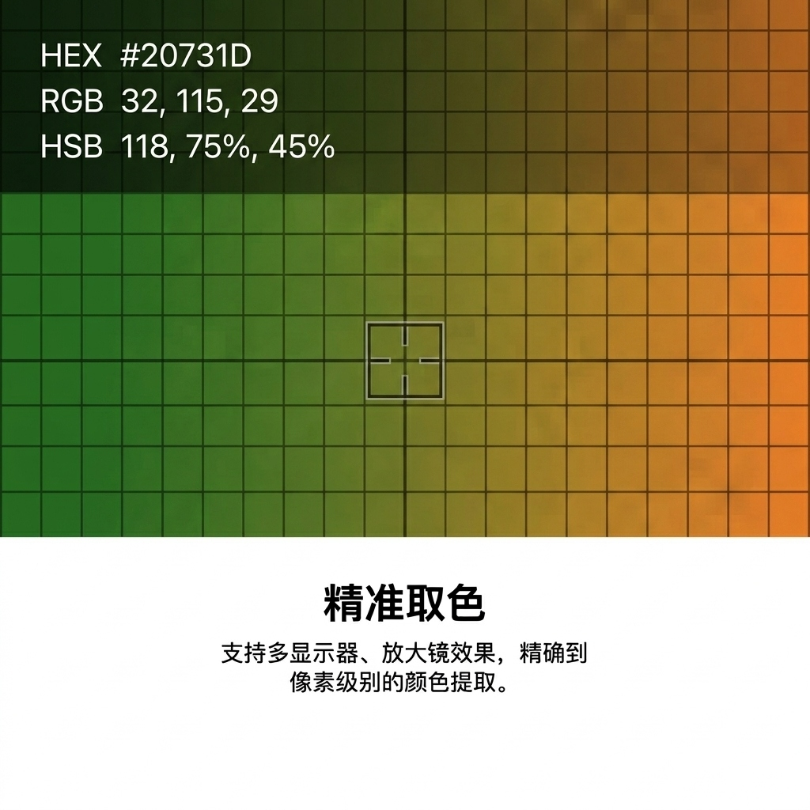

原生 Swift 极速体验 · 融合截图标注、高性能录屏、悬浮贴图与 Finder 右键增强的 macOS 终极效率利器。

抛弃繁杂的第三方单功能插件，以统一、纯粹且强大的原生体验接管你的日常操作。
智能识别悬停窗口，支持自由区域截图、智能窗口识别以及超长网页/文档滚动长截图。内置功能完善的标注工具栏（支持画笔、箭头、文字、马赛克、高亮、橡皮与步骤序号），更有毛玻璃大阴影和 0–32px 自定义圆角外框美化，支持保存为 PNG、JPG、PDF、HEIF 等多种格式。


基于 macOS 底层 ScreenCaptureKit 捕获架构，超低资源占用。支持区域/全屏/窗口录屏，支持 30/60/120 FPS 极速高帧率与 HEVC 编解码，内建独立 HUD 悬浮控制条和多声道捕获音源混合。

一键将截图或任意图片固定在最上层窗口展示，随时对照。拥有完整的悬浮多窗口管理，支持跨 Space 空间跟随、透明度无级调节及双击缩放，支持快捷键 ⌥⇧P 一键贴图。

可视化 16 倍像素放大预览，支持 HEX、RGB、HSL、Swift (NSColor) 与 CSS 等多种格式导出。拥有独立的全局快捷键 ⌥⇧C，并能自动保存最近 20 条颜色取色历史记录。

在此可探索我们完全由原生 Swift 编写的设置控制中心，每一页设置项均使用真实应用内截图展示。

持续迭代优化，为您带来更稳定、更纯净的原生 macOS 效率体验。
支持 macOS 12.3 (Monterey) 及以上版本（需 ScreenCaptureKit 底层支持）。
首次启动时，请授予屏幕录制权限（用于截图与取色）、辅助功能权限（用于捕获全局快捷键），并启用 Finder 扩展（系统设置 → 登录项与扩展）。
解压 SnapClick-v0.1.3-beta.zip 并将 App 拖入「应用程序」文件夹即可运行。
依托 macOS 最新底层技术，保证内存占用极低且响应迅速，绝无后台多余网络消耗。
完全由原生 Swift 语言编写，确保无任何臃肿框架，秒开体验。
采用 Apple 官方高性能屏幕捕获框架，支持 macOS 12.3+ 高帧率屏幕流录屏与高精准截图。
基于系统底层 FinderSync 架构开发的右键增强，完美契合 Finder 操作环境。
底层的全局快捷键高精度拦截，热键响应不延迟，无冲突。
SnapClick 全面开源，支持在您自己的电脑上使用 Xcode 15 快速编译和私有化构建。